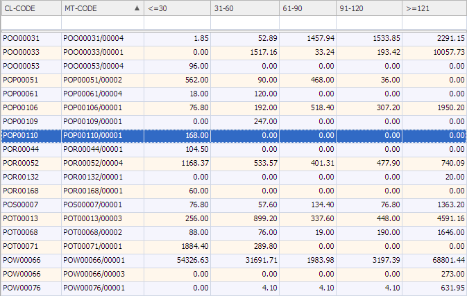

| Field Name | Data Type | Description |
| Client code | ||
| Matter code | ||
| Value of WIP up to and including 30 days old | ||
| Value of WIP between 31 and 60 days old | ||
| Value of WIP between 61 and 90 days old | ||
| Value of WIP between 91 and 120 days old | ||
| Value of WIP over 120 days old |
An example output of this view is shown below
